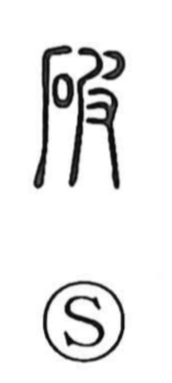

破

Kun: yaburu, yabureru | On: ha
to break ・ to tear ・ to destroy ・ to defeat
Explanation
破 joins 石, stone, with 皮 as its phonetic. The concrete action is a stone's surface breaking and coming away. 皮 pictures a hand peeling an animal's skin, placing attention on the outer layer that separates from the body beneath it.
Early definitions concern breaking stone, loosening its structure, and separation. From this come splitting, cracking, crumbling, or opening something through a break. The action extends to materials and structures generally.
What is broken can no longer hold its former arrangement. 破 therefore also means destroying, violating a settled condition, or defeating an opposing force. The phonetic family joins the ideas of an outer surface and its opening or falling apart.